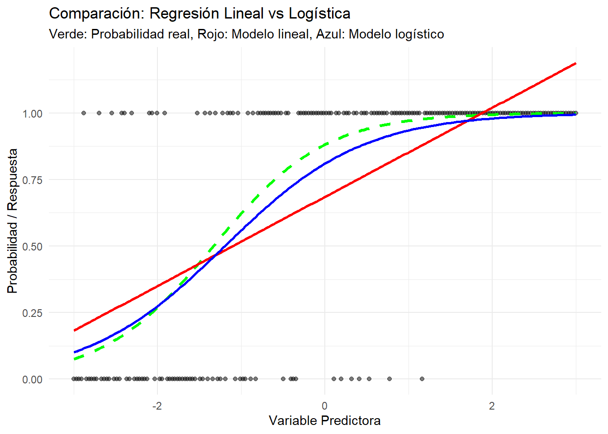
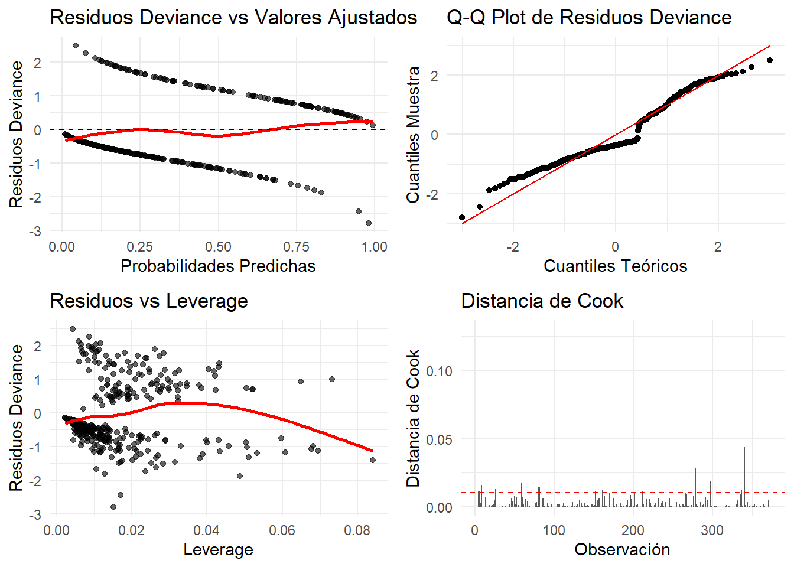
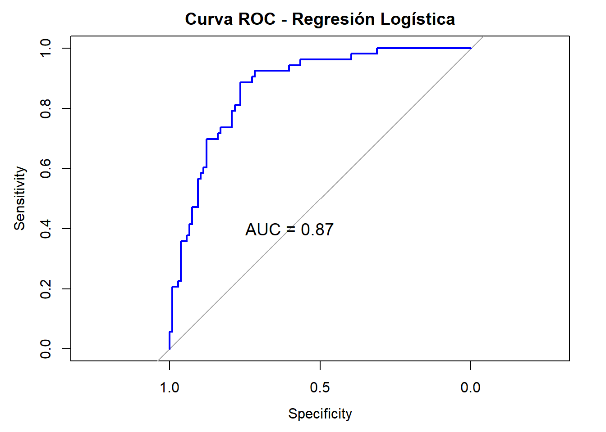
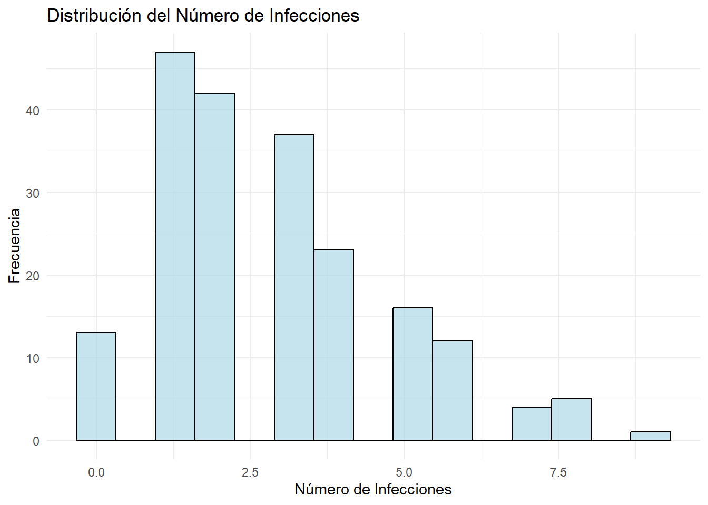
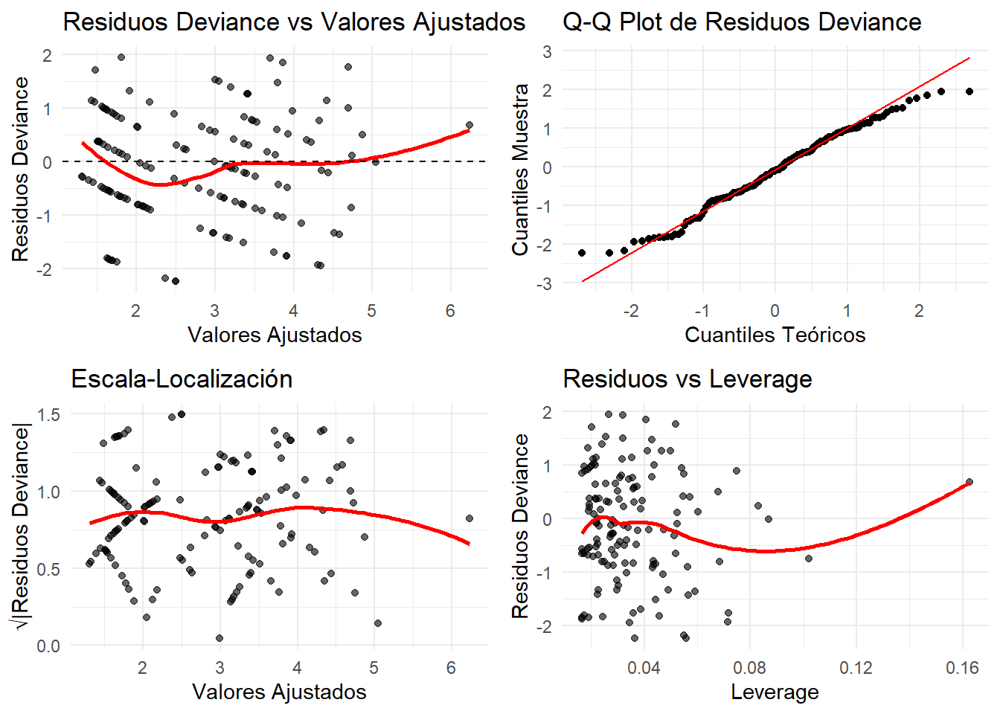
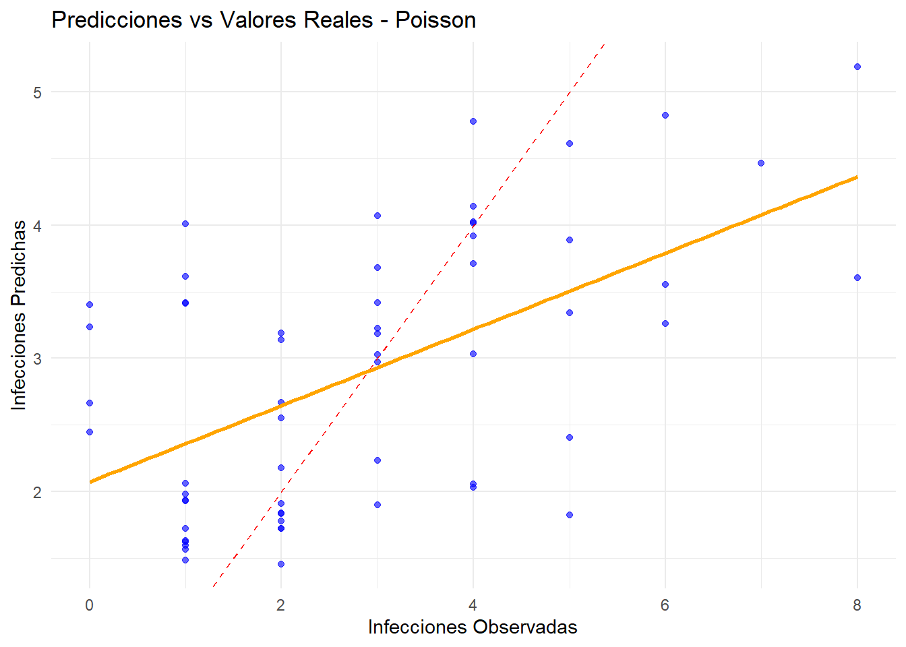
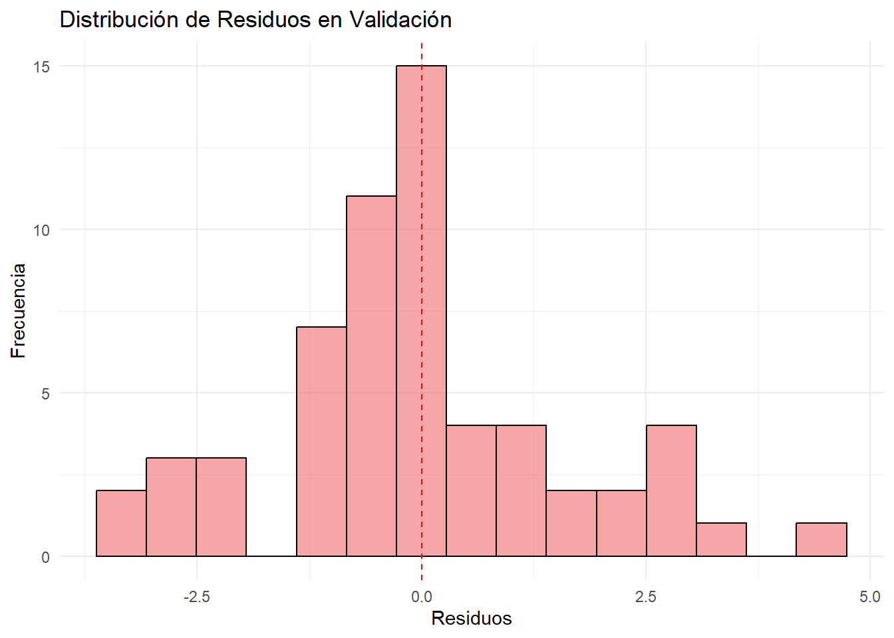

# Cargar librerías necesarias
suppressPackageStartupMessages({
library(tidyverse)
library(MASS) # Para datasets y binomial negativa
library(car) # Para diagnósticos
library(broom) # Para resultados ordenados
library(pROC) # Para curvas ROC
library(caret) # Para matrices de confusión
library(corrplot) # Para visualizaciones
library(gridExtra) # Para múltiples gráficos
library(performance) # Para diagnósticos de modelos
library(see) # Para visualizaciones de performance
})
set.seed(123)Laboratorio 5: Modelos Lineales Generalizados
Modelos Estadísticos de Predicción
Objetivos del Laboratorio
Al finalizar este laboratorio, serás capaz de:
- Entender los fundamentos de los Modelos Lineales Generalizados (GLM)
- Ajustar e interpretar modelos de regresión logística
- Implementar regresión de Poisson para datos de conteo
- Aplicar regresión binomial negativa para datos con sobredispersión
- Evaluar la bondad de ajuste usando deviance y criterios de información
- Realizar diagnósticos específicos para GLMs
- Validar modelos usando métricas apropiadas para cada tipo de respuesta
Configuración Inicial
Parte 1: Introducción a los GLMs
Conceptos Fundamentales
cat("=== COMPONENTES DE UN MODELO LINEAL GENERALIZADO ===\n\n")=== COMPONENTES DE UN MODELO LINEAL GENERALIZADO ===cat("1. COMPONENTE ALEATORIO:\n")1. COMPONENTE ALEATORIO:cat(" - Define la distribución de la variable respuesta\n") - Define la distribución de la variable respuestacat(" - Debe pertenecer a la familia exponencial\n") - Debe pertenecer a la familia exponencialcat(" - Ejemplos: Normal, Binomial, Poisson, Gamma\n\n") - Ejemplos: Normal, Binomial, Poisson, Gammacat("2. COMPONENTE SISTEMÁTICO:\n")2. COMPONENTE SISTEMÁTICO:cat(" - Combinación lineal de predictores: η = β₀ + β₁X₁ + ... + βₚXₚ\n") - Combinación lineal de predictores: η = β₀ + β₁X₁ + ... + βₚXₚcat(" - η es el predictor lineal\n\n") - η es el predictor linealcat("3. FUNCIÓN DE ENLACE:\n")3. FUNCIÓN DE ENLACE:cat(" - Conecta la media de Y con el predictor lineal: g(μ) = η\n") - Conecta la media de Y con el predictor lineal: g(μ) = ηcat(" - Debe ser monótona y diferenciable\n\n") - Debe ser monótona y diferenciable# Tabla de distribuciones comunes y sus enlaces
distribuciones_glm <- data.frame(
Distribucion = c("Normal", "Binomial", "Poisson", "Gamma", "Inversa Gaussiana"),
Uso_Tipico = c("Variables continuas", "Proporciones/Binarias", "Conteos",
"Variables positivas sesgadas", "Tiempos hasta evento"),
Funcion_Varianza = c("1", "μ(1-μ)", "μ", "μ²", "μ³"),
Enlace_Canonico = c("Identidad: μ", "Logit: log(μ/(1-μ))", "Log: log(μ)",
"Inverso: 1/μ", "Inverso cuadrado: 1/μ²"),
Enlace_Comun = c("Identidad", "Logit", "Log", "Log", "Log")
)
print(distribuciones_glm) Distribucion Uso_Tipico Funcion_Varianza
1 Normal Variables continuas 1
2 Binomial Proporciones/Binarias μ(1-μ)
3 Poisson Conteos μ
4 Gamma Variables positivas sesgadas μ²
5 Inversa Gaussiana Tiempos hasta evento μ³
Enlace_Canonico Enlace_Comun
1 Identidad: μ Identidad
2 Logit: log(μ/(1-μ)) Logit
3 Log: log(μ) Log
4 Inverso: 1/μ Log
5 Inverso cuadrado: 1/μ² LogComparación con Regresión Lineal
# Generar datos para mostrar limitaciones de regresión lineal con respuesta binaria
n <- 200
x <- seq(-3, 3, length.out = n)
# Generar probabilidades usando función logística
prob_real <- 1 / (1 + exp(-2 - 1.5*x))
y_binario <- rbinom(n, 1, prob_real)
datos_ejemplo <- data.frame(x = x, y = y_binario, prob_real = prob_real)
# Ajustar modelo lineal (incorrecto)
modelo_lineal <- lm(y ~ x, data = datos_ejemplo)
# Ajustar modelo logístico (correcto)
modelo_logistico <- glm(y ~ x, data = datos_ejemplo, family = binomial)
# Predicciones
datos_ejemplo$pred_lineal <- predict(modelo_lineal)
datos_ejemplo$pred_logistico <- predict(modelo_logistico, type = "response")
# Visualización
ggplot(datos_ejemplo, aes(x = x)) +
geom_point(aes(y = y), alpha = 0.5, color = "black") +
geom_line(aes(y = prob_real), color = "green", size = 1.2, linetype = "dashed") +
geom_line(aes(y = pred_lineal), color = "red", size = 1) +
geom_line(aes(y = pred_logistico), color = "blue", size = 1) +
labs(title = "Comparación: Regresión Lineal vs Logística",
subtitle = "Verde: Probabilidad real, Rojo: Modelo lineal, Azul: Modelo logístico",
x = "Variable Predictora", y = "Probabilidad / Respuesta") +
theme_minimal()
cat("=== PROBLEMAS DE LA REGRESIÓN LINEAL PARA RESPUESTA BINARIA ===\n")=== PROBLEMAS DE LA REGRESIÓN LINEAL PARA RESPUESTA BINARIA ===cat("1. Predicciones fuera del rango [0,1]\n")1. Predicciones fuera del rango [0,1]cat("2. Varianza no constante (heterocedasticidad)\n")2. Varianza no constante (heterocedasticidad)cat("3. Residuos no normales\n")3. Residuos no normalescat("4. Relación no lineal entre predictores y probabilidad\n\n")4. Relación no lineal entre predictores y probabilidad# Mostrar predicciones problemáticas del modelo lineal
pred_problematicas <- sum(datos_ejemplo$pred_lineal < 0 | datos_ejemplo$pred_lineal > 1)
cat("Predicciones fuera de [0,1] en modelo lineal:", pred_problematicas, "de", n, "\n")Predicciones fuera de [0,1] en modelo lineal: 38 de 200 Parte 2: Regresión Logística
Dataset de Trabajo
# Usar el dataset Pima Indians Diabetes
data(Pima.tr)
data(Pima.te)
# Combinar datasets para mayor tamaño de muestra
pima_completo <- rbind(Pima.tr, Pima.te)
# Información del dataset
cat("=== DATASET PIMA INDIANS DIABETES ===\n")=== DATASET PIMA INDIANS DIABETES ===cat("Observaciones:", nrow(pima_completo), "\n")Observaciones: 532 cat("Variables:", ncol(pima_completo), "\n\n")Variables: 8 # Descripción de variables
cat("Variables:\n")Variables:cat("type: Diabetes (Yes/No) - Variable respuesta\n")type: Diabetes (Yes/No) - Variable respuestacat("npreg: Número de embarazos\n")npreg: Número de embarazoscat("glu: Concentración de glucosa en plasma\n")glu: Concentración de glucosa en plasmacat("bp: Presión arterial diastólica\n")bp: Presión arterial diastólicacat("skin: Grosor del pliegue cutáneo del tríceps\n")skin: Grosor del pliegue cutáneo del trícepscat("bmi: Índice de masa corporal\n")bmi: Índice de masa corporalcat("ped: Función de pedigrí de diabetes\n")ped: Función de pedigrí de diabetescat("age: Edad\n\n")age: Edad# Resumen estadístico
summary(pima_completo) npreg glu bp skin
Min. : 0.000 Min. : 56.00 Min. : 24.00 Min. : 7.00
1st Qu.: 1.000 1st Qu.: 98.75 1st Qu.: 64.00 1st Qu.:22.00
Median : 2.000 Median :115.00 Median : 72.00 Median :29.00
Mean : 3.517 Mean :121.03 Mean : 71.51 Mean :29.18
3rd Qu.: 5.000 3rd Qu.:141.25 3rd Qu.: 80.00 3rd Qu.:36.00
Max. :17.000 Max. :199.00 Max. :110.00 Max. :99.00
bmi ped age type
Min. :18.20 Min. :0.0850 Min. :21.00 No :355
1st Qu.:27.88 1st Qu.:0.2587 1st Qu.:23.00 Yes:177
Median :32.80 Median :0.4160 Median :28.00
Mean :32.89 Mean :0.5030 Mean :31.61
3rd Qu.:36.90 3rd Qu.:0.6585 3rd Qu.:38.00
Max. :67.10 Max. :2.4200 Max. :81.00 # Distribución de la variable respuesta
table(pima_completo$type)
No Yes
355 177 prop.table(table(pima_completo$type))
No Yes
0.6672932 0.3327068 Ajuste del Modelo Logístico
# Dividir datos en entrenamiento y prueba
set.seed(123)
indices_train <- createDataPartition(pima_completo$type, p = 0.7, list = FALSE)
datos_train <- pima_completo[indices_train, ]
datos_test <- pima_completo[-indices_train, ]
cat("=== DIVISIÓN DE DATOS ===\n")=== DIVISIÓN DE DATOS ===cat("Entrenamiento:", nrow(datos_train), "observaciones\n")Entrenamiento: 373 observacionescat("Prueba:", nrow(datos_test), "observaciones\n\n")Prueba: 159 observaciones# Ajustar modelo logístico completo
modelo_logit_completo <- glm(type ~ ., data = datos_train, family = binomial)
# Resumen del modelo
summary(modelo_logit_completo)
Call:
glm(formula = type ~ ., family = binomial, data = datos_train)
Coefficients:
Estimate Std. Error z value Pr(>|z|)
(Intercept) -9.689185 1.199830 -8.075 6.72e-16 ***
npreg 0.124403 0.050839 2.447 0.01441 *
glu 0.034387 0.005088 6.758 1.40e-11 ***
bp -0.004979 0.012363 -0.403 0.68714
skin 0.012013 0.017157 0.700 0.48383
bmi 0.087642 0.029762 2.945 0.00323 **
ped 1.010223 0.437825 2.307 0.02103 *
age 0.023155 0.015416 1.502 0.13310
---
Signif. codes: 0 '***' 0.001 '**' 0.01 '*' 0.05 '.' 0.1 ' ' 1
(Dispersion parameter for binomial family taken to be 1)
Null deviance: 474.38 on 372 degrees of freedom
Residual deviance: 329.30 on 365 degrees of freedom
AIC: 345.3
Number of Fisher Scoring iterations: 5# Interpretación de coeficientes mediante odds ratios
odds_ratios <- exp(coef(modelo_logit_completo))
conf_intervals <- exp(confint(modelo_logit_completo))
cat("\n=== ODDS RATIOS E INTERVALOS DE CONFIANZA ===\n")
=== ODDS RATIOS E INTERVALOS DE CONFIANZA ===resultados_or <- data.frame(
Variable = names(odds_ratios),
OR = round(odds_ratios, 3),
IC_2.5 = round(conf_intervals[,1], 3),
IC_97.5 = round(conf_intervals[,2], 3)
)
print(resultados_or) Variable OR IC_2.5 IC_97.5
(Intercept) (Intercept) 0.000 0.000 0.001
npreg npreg 1.132 1.027 1.254
glu glu 1.035 1.025 1.046
bp bp 0.995 0.971 1.020
skin skin 1.012 0.979 1.047
bmi bmi 1.092 1.031 1.159
ped ped 2.746 1.176 6.569
age age 1.023 0.993 1.055# Interpretación práctica
cat("\n=== INTERPRETACIÓN DE ODDS RATIOS ===\n")
=== INTERPRETACIÓN DE ODDS RATIOS ===cat("glu (Glucosa): OR =", round(odds_ratios["glu"], 3), "\n")glu (Glucosa): OR = 1.035 cat(" → Por cada mg/dl adicional de glucosa, las odds de diabetes se multiplican por", round(odds_ratios["glu"], 3), "\n") → Por cada mg/dl adicional de glucosa, las odds de diabetes se multiplican por 1.035 cat(" → Esto representa un cambio de", round((odds_ratios["glu"] - 1) * 100, 1), "% en las odds\n\n") → Esto representa un cambio de 3.5 % en las oddscat("bmi (IMC): OR =", round(odds_ratios["bmi"], 3), "\n")bmi (IMC): OR = 1.092 cat(" → Por cada unidad adicional de IMC, las odds de diabetes se multiplican por", round(odds_ratios["bmi"], 3), "\n") → Por cada unidad adicional de IMC, las odds de diabetes se multiplican por 1.092 cat(" → Esto representa un cambio de", round((odds_ratios["bmi"] - 1) * 100, 1), "% en las odds\n") → Esto representa un cambio de 9.2 % en las oddsSelección de Variables
# Método stepwise para selección de variables
modelo_inicial <- glm(type ~ 1, data = datos_train, family = binomial)
modelo_stepwise <- step(modelo_inicial,
scope = list(lower = modelo_inicial, upper = modelo_logit_completo),
direction = "both", trace = FALSE)
cat("=== SELECCIÓN STEPWISE ===\n")=== SELECCIÓN STEPWISE ===cat("Variables seleccionadas:\n")Variables seleccionadas:formula_final <- formula(modelo_stepwise)
print(formula_final)type ~ glu + bmi + npreg + ped + age# Comparar modelos
cat("\n=== COMPARACIÓN DE MODELOS ===\n")
=== COMPARACIÓN DE MODELOS ===cat("Modelo completo - AIC:", round(AIC(modelo_logit_completo), 2), "\n")Modelo completo - AIC: 345.3 cat("Modelo stepwise - AIC:", round(AIC(modelo_stepwise), 2), "\n")Modelo stepwise - AIC: 341.96 # Test de razón de verosimilitudes
lrt_test <- anova(modelo_stepwise, modelo_logit_completo, test = "LRT")
print(lrt_test)Analysis of Deviance Table
Model 1: type ~ glu + bmi + npreg + ped + age
Model 2: type ~ npreg + glu + bp + skin + bmi + ped + age
Resid. Df Resid. Dev Df Deviance Pr(>Chi)
1 367 329.96
2 365 329.30 2 0.66843 0.7159# Usar modelo final (stepwise)
modelo_final <- modelo_stepwise
summary(modelo_final)
Call:
glm(formula = type ~ glu + bmi + npreg + ped + age, family = binomial,
data = datos_train)
Coefficients:
Estimate Std. Error z value Pr(>|z|)
(Intercept) -9.943128 1.111885 -8.943 < 2e-16 ***
glu 0.034063 0.005003 6.808 9.91e-12 ***
bmi 0.097160 0.023507 4.133 3.58e-05 ***
npreg 0.126841 0.050554 2.509 0.0121 *
ped 1.023143 0.437064 2.341 0.0192 *
age 0.022165 0.014731 1.505 0.1324
---
Signif. codes: 0 '***' 0.001 '**' 0.01 '*' 0.05 '.' 0.1 ' ' 1
(Dispersion parameter for binomial family taken to be 1)
Null deviance: 474.38 on 372 degrees of freedom
Residual deviance: 329.96 on 367 degrees of freedom
AIC: 341.96
Number of Fisher Scoring iterations: 5Bondad de Ajuste
# Pseudo R²
mcfadden_r2 <- 1 - (logLik(modelo_final) / logLik(modelo_inicial))
nagelkerke_r2 <- function(modelo_null, modelo_full) {
n <- nobs(modelo_full)
cox_snell <- 1 - (exp(logLik(modelo_null))/exp(logLik(modelo_full)))^(2/n)
max_r2 <- 1 - exp(logLik(modelo_null))^(2/n)
return(cox_snell / max_r2)
}
cat("=== MEDIDAS DE BONDAD DE AJUSTE ===\n")=== MEDIDAS DE BONDAD DE AJUSTE ===cat("McFadden R²:", round(as.numeric(mcfadden_r2), 3), "\n")McFadden R²: 0.304 cat("Nagelkerke R²:", round(nagelkerke_r2(modelo_inicial, modelo_final), 3), "\n")Nagelkerke R²: 0.446 cat("AIC:", round(AIC(modelo_final), 2), "\n")AIC: 341.96 cat("Deviance:", round(deviance(modelo_final), 2), "\n")Deviance: 329.96 cat("Deviance nula:", round(modelo_final$null.deviance, 2), "\n")Deviance nula: 474.38 # Test de significancia global
deviance_diff <- modelo_final$null.deviance - deviance(modelo_final)
df_diff <- modelo_final$df.null - modelo_final$df.residual
p_valor_global <- 1 - pchisq(deviance_diff, df_diff)
cat("\n=== TEST DE SIGNIFICANCIA GLOBAL ===\n")
=== TEST DE SIGNIFICANCIA GLOBAL ===cat("Chi-cuadrado:", round(deviance_diff, 2), "\n")Chi-cuadrado: 144.41 cat("Grados de libertad:", df_diff, "\n")Grados de libertad: 5 cat("p-valor:", format.pval(p_valor_global, digits = 3), "\n")p-valor: <2e-16 Diagnósticos del Modelo
# Calcular diferentes tipos de residuos
datos_train$residuos_pearson <- residuals(modelo_final, type = "pearson")
datos_train$residuos_deviance <- residuals(modelo_final, type = "deviance")
datos_train$valores_ajustados <- fitted(modelo_final)
datos_train$leverage <- hatvalues(modelo_final)
datos_train$cook_distance <- cooks.distance(modelo_final)
# Gráficos de diagnóstico
p1 <- ggplot(datos_train, aes(x = valores_ajustados, y = residuos_deviance)) +
geom_point(alpha = 0.6) +
geom_smooth(se = FALSE, color = "red") +
geom_hline(yintercept = 0, linetype = "dashed") +
labs(title = "Residuos Deviance vs Valores Ajustados",
x = "Probabilidades Predichas", y = "Residuos Deviance") +
theme_minimal()
p2 <- ggplot(datos_train, aes(sample = residuos_deviance)) +
stat_qq() +
stat_qq_line(color = "red") +
labs(title = "Q-Q Plot de Residuos Deviance",
x = "Cuantiles Teóricos", y = "Cuantiles Muestra") +
theme_minimal()
p3 <- ggplot(datos_train, aes(x = leverage, y = residuos_deviance)) +
geom_point(alpha = 0.6) +
geom_smooth(se = FALSE, color = "red") +
labs(title = "Residuos vs Leverage",
x = "Leverage", y = "Residuos Deviance") +
theme_minimal()
p4 <- ggplot(datos_train, aes(x = seq_along(cook_distance), y = cook_distance)) +
geom_col() +
geom_hline(yintercept = 4/nrow(datos_train), color = "red", linetype = "dashed") +
labs(title = "Distancia de Cook",
x = "Observación", y = "Distancia de Cook") +
theme_minimal()
grid.arrange(p1, p2, p3, p4, ncol = 2)
# Identificar observaciones influyentes
n_obs <- nrow(datos_train)
outliers_cook <- which(datos_train$cook_distance > 4/n_obs)
outliers_leverage <- which(datos_train$leverage > 2*length(coef(modelo_final))/n_obs)
cat("\n=== DIAGNÓSTICO DE OBSERVACIONES INFLUYENTES ===\n")
=== DIAGNÓSTICO DE OBSERVACIONES INFLUYENTES ===cat("Observaciones con alta distancia de Cook (>4/n):", length(outliers_cook), "\n")Observaciones con alta distancia de Cook (>4/n): 22 if(length(outliers_cook) > 0) {
cat("Índices:", head(outliers_cook, 10), "\n")
}Índices: 4 6 9 26 59 76 80 82 100 147 cat("Observaciones con alto leverage (>2p/n):", length(outliers_leverage), "\n")Observaciones con alto leverage (>2p/n): 39 Validación y Predicción
# Predicciones en conjunto de prueba
pred_prob <- predict(modelo_final, newdata = datos_test, type = "response")
pred_class <- ifelse(pred_prob > 0.5, "Yes", "No")
# Matriz de confusión
matriz_confusion <- table(Predicho = pred_class, Real = datos_test$type)
print(matriz_confusion) Real
Predicho No Yes
No 93 20
Yes 13 33# Métricas de clasificación
accuracy <- sum(diag(matriz_confusion)) / sum(matriz_confusion)
sensitivity <- matriz_confusion[2,2] / sum(matriz_confusion[,2]) # VP / (VP + FN)
specificity <- matriz_confusion[1,1] / sum(matriz_confusion[,1]) # VN / (VN + FP)
precision <- matriz_confusion[2,2] / sum(matriz_confusion[2,]) # VP / (VP + FP)
cat("\n=== MÉTRICAS DE CLASIFICACIÓN ===\n")
=== MÉTRICAS DE CLASIFICACIÓN ===cat("Accuracy (Precisión):", round(accuracy, 3), "\n")Accuracy (Precisión): 0.792 cat("Sensitivity (Sensibilidad):", round(sensitivity, 3), "\n")Sensitivity (Sensibilidad): 0.623 cat("Specificity (Especificidad):", round(specificity, 3), "\n")Specificity (Especificidad): 0.877 cat("Precision (Precisión Positiva):", round(precision, 3), "\n")Precision (Precisión Positiva): 0.717 # Curva ROC
roc_curve <- roc(datos_test$type, pred_prob)
auc_value <- auc(roc_curve)
# Gráfico ROC
plot(roc_curve, main = "Curva ROC - Regresión Logística",
col = "blue", lwd = 2)
text(0.6, 0.4, paste("AUC =", round(auc_value, 3)), cex = 1.2)
cat("\n=== ANÁLISIS ROC ===\n")
=== ANÁLISIS ROC ===cat("AUC (Área bajo la curva):", round(auc_value, 3), "\n")AUC (Área bajo la curva): 0.87 # Interpretación del AUC
if(auc_value >= 0.9) {
cat("Interpretación: Excelente discriminación\n")
} else if(auc_value >= 0.8) {
cat("Interpretación: Buena discriminación\n")
} else if(auc_value >= 0.7) {
cat("Interpretación: Discriminación aceptable\n")
} else if(auc_value >= 0.6) {
cat("Interpretación: Discriminación pobre\n")
} else {
cat("Interpretación: Sin capacidad discriminativa útil\n")
}Interpretación: Buena discriminación# Punto óptimo en la curva ROC
coords_optimo <- coords(roc_curve, "best", ret = c("threshold", "sensitivity", "specificity"))
cat("\nPunto óptimo:\n")
Punto óptimo:cat("Umbral:", round(coords_optimo$threshold, 3), "\n")Umbral: 0.289 cat("Sensibilidad:", round(coords_optimo$sensitivity, 3), "\n")Sensibilidad: 0.887 cat("Especificidad:", round(coords_optimo$specificity, 3), "\n")Especificidad: 0.764 Parte 3: Regresión de Poisson
Simulación de Datos de Conteo
# Simular datos de conteo realistas
set.seed(456)
n <- 200
# Variables predictoras
hospital_size <- sample(c("Pequeño", "Mediano", "Grande"), n, replace = TRUE, prob = c(0.4, 0.4, 0.2))
quality_score <- rnorm(n, mean = 75, sd = 10)
patient_complexity <- rnorm(n, mean = 50, sd = 15)
# Codificar tamaño del hospital
size_medium <- ifelse(hospital_size == "Mediano", 1, 0)
size_large <- ifelse(hospital_size == "Grande", 1, 0)
# Generar número de infecciones (variable de conteo)
# Log-tasa lineal con los predictores
log_lambda <- 1.5 - 0.02*quality_score + size_medium*0.5 + size_large*0.8 + 0.01*patient_complexity
lambda <- exp(log_lambda)
infecciones <- rpois(n, lambda)
# Crear dataset
datos_hospitales <- data.frame(
infecciones = infecciones,
tamaño = hospital_size,
calidad = quality_score,
complejidad = patient_complexity,
size_medium = size_medium,
size_large = size_large
)
# Información del dataset
cat("=== DATASET SIMULADO: INFECCIONES HOSPITALARIAS ===\n")=== DATASET SIMULADO: INFECCIONES HOSPITALARIAS ===cat("Observaciones:", nrow(datos_hospitales), "\n")Observaciones: 200 cat("Variable respuesta: Número de infecciones por hospital\n\n")Variable respuesta: Número de infecciones por hospital# Estadísticas descriptivas
cat("=== ESTADÍSTICAS DESCRIPTIVAS ===\n")=== ESTADÍSTICAS DESCRIPTIVAS ===summary(datos_hospitales) infecciones tamaño calidad complejidad
Min. :0.000 Length:200 Min. : 51.18 Min. :14.29
1st Qu.:1.000 Class :character 1st Qu.: 67.50 1st Qu.:42.95
Median :2.000 Mode :character Median : 74.99 Median :52.06
Mean :2.815 Mean : 74.91 Mean :52.91
3rd Qu.:4.000 3rd Qu.: 82.84 3rd Qu.:62.26
Max. :9.000 Max. :101.99 Max. :95.14
size_medium size_large
Min. :0.000 Min. :0.00
1st Qu.:0.000 1st Qu.:0.00
Median :0.000 Median :0.00
Mean :0.335 Mean :0.24
3rd Qu.:1.000 3rd Qu.:0.00
Max. :1.000 Max. :1.00 # Distribución de la variable respuesta
cat("\n=== DISTRIBUCIÓN DE INFECCIONES ===\n")
=== DISTRIBUCIÓN DE INFECCIONES ===table(datos_hospitales$infecciones)
0 1 2 3 4 5 6 7 8 9
13 47 42 37 23 16 12 4 5 1 # Verificar supuesto de equidispersión
media_infecciones <- mean(datos_hospitales$infecciones)
var_infecciones <- var(datos_hospitales$infecciones)
cat("\nMedia:", round(media_infecciones, 3), "\n")
Media: 2.815 cat("Varianza:", round(var_infecciones, 3), "\n")Varianza: 3.82 cat("Razón Varianza/Media:", round(var_infecciones/media_infecciones, 3), "\n")Razón Varianza/Media: 1.357 # Histograma
ggplot(datos_hospitales, aes(x = infecciones)) +
geom_histogram(bins = 15, fill = "lightblue", color = "black", alpha = 0.7) +
labs(title = "Distribución del Número de Infecciones",
x = "Número de Infecciones", y = "Frecuencia") +
theme_minimal()
Ajuste del Modelo de Poisson
# Dividir datos
indices_train_pois <- createDataPartition(datos_hospitales$infecciones, p = 0.7, list = FALSE)
train_pois <- datos_hospitales[indices_train_pois, ]
test_pois <- datos_hospitales[-indices_train_pois, ]
# Ajustar modelo de Poisson
modelo_poisson <- glm(infecciones ~ calidad + size_medium + size_large + complejidad,
data = train_pois, family = poisson)
summary(modelo_poisson)
Call:
glm(formula = infecciones ~ calidad + size_medium + size_large +
complejidad, family = poisson, data = train_pois)
Coefficients:
Estimate Std. Error z value Pr(>|z|)
(Intercept) 1.168845 0.454286 2.573 0.0101 *
calidad -0.012462 0.005370 -2.321 0.0203 *
size_medium 0.597779 0.126300 4.733 2.21e-06 ***
size_large 0.826954 0.129682 6.377 1.81e-10 ***
complejidad 0.006368 0.003492 1.824 0.0682 .
---
Signif. codes: 0 '***' 0.001 '**' 0.01 '*' 0.05 '.' 0.1 ' ' 1
(Dispersion parameter for poisson family taken to be 1)
Null deviance: 196.79 on 140 degrees of freedom
Residual deviance: 141.79 on 136 degrees of freedom
AIC: 524.19
Number of Fisher Scoring iterations: 5# Interpretación de coeficientes como IRR (Incidence Rate Ratios)
irr <- exp(coef(modelo_poisson))
conf_int_pois <- exp(confint(modelo_poisson))
cat("\n=== INCIDENCE RATE RATIOS (IRR) ===\n")
=== INCIDENCE RATE RATIOS (IRR) ===resultados_irr <- data.frame(
Variable = names(irr),
IRR = round(irr, 3),
IC_2.5 = round(conf_int_pois[,1], 3),
IC_97.5 = round(conf_int_pois[,2], 3)
)
print(resultados_irr) Variable IRR IC_2.5 IC_97.5
(Intercept) (Intercept) 3.218 1.313 7.796
calidad calidad 0.988 0.977 0.998
size_medium size_medium 1.818 1.421 2.333
size_large size_large 2.286 1.775 2.953
complejidad complejidad 1.006 0.999 1.013# Interpretación práctica
cat("\n=== INTERPRETACIÓN DE IRR ===\n")
=== INTERPRETACIÓN DE IRR ===cat("calidad: IRR =", round(irr["calidad"], 3), "\n")calidad: IRR = 0.988 cat(" → Por cada punto adicional en calidad, la tasa de infecciones se multiplica por", round(irr["calidad"], 3), "\n") → Por cada punto adicional en calidad, la tasa de infecciones se multiplica por 0.988 cat(" → Esto representa una disminución del", round((1 - irr["calidad"]) * 100, 1), "% en la tasa\n\n") → Esto representa una disminución del 1.2 % en la tasacat("size_large: IRR =", round(irr["size_large"], 3), "\n")size_large: IRR = 2.286 cat(" → Hospitales grandes tienen una tasa", round(irr["size_large"], 2), "veces mayor que pequeños\n") → Hospitales grandes tienen una tasa 2.29 veces mayor que pequeñoscat(" → Esto representa un aumento del", round((irr["size_large"] - 1) * 100, 1), "% en la tasa\n") → Esto representa un aumento del 128.6 % en la tasaDiagnóstico del Modelo de Poisson
# Residuos y diagnósticos
train_pois$residuos_pearson <- residuals(modelo_poisson, type = "pearson")
train_pois$residuos_deviance <- residuals(modelo_poisson, type = "deviance")
train_pois$valores_ajustados <- fitted(modelo_poisson)
train_pois$leverage <- hatvalues(modelo_poisson)
# Estadístico de dispersión
pearson_stat <- sum(train_pois$residuos_pearson^2)
df_residual <- modelo_poisson$df.residual
dispersion_stat <- pearson_stat / df_residual
cat("=== DIAGNÓSTICO DE SOBREDISPERSIÓN ===\n")=== DIAGNÓSTICO DE SOBREDISPERSIÓN ===cat("Estadístico de Pearson:", round(pearson_stat, 2), "\n")Estadístico de Pearson: 127.35 cat("Grados de libertad:", df_residual, "\n")Grados de libertad: 136 cat("Estadístico de dispersión:", round(dispersion_stat, 3), "\n")Estadístico de dispersión: 0.936 if(dispersion_stat > 1.5) {
cat("CONCLUSIÓN: Hay evidencia de sobredispersión (φ > 1.5)\n")
cat("RECOMENDACIÓN: Considerar modelo binomial negativo\n")
} else if(dispersion_stat > 1.2) {
cat("CONCLUSIÓN: Posible sobredispersión leve (φ > 1.2)\n")
cat("RECOMENDACIÓN: Verificar con modelo binomial negativo\n")
} else {
cat("CONCLUSIÓN: No hay evidencia clara de sobredispersión\n")
cat("RECOMENDACIÓN: Modelo de Poisson es apropiado\n")
}CONCLUSIÓN: No hay evidencia clara de sobredispersión
RECOMENDACIÓN: Modelo de Poisson es apropiado# Gráficos de diagnóstico
p1 <- ggplot(train_pois, aes(x = valores_ajustados, y = residuos_deviance)) +
geom_point(alpha = 0.6) +
geom_smooth(se = FALSE, color = "red") +
geom_hline(yintercept = 0, linetype = "dashed") +
labs(title = "Residuos Deviance vs Valores Ajustados",
x = "Valores Ajustados", y = "Residuos Deviance") +
theme_minimal()
p2 <- ggplot(train_pois, aes(sample = residuos_deviance)) +
stat_qq() +
stat_qq_line(color = "red") +
labs(title = "Q-Q Plot de Residuos Deviance",
x = "Cuantiles Teóricos", y = "Cuantiles Muestra") +
theme_minimal()
p3 <- ggplot(train_pois, aes(x = valores_ajustados, y = sqrt(abs(residuos_deviance)))) +
geom_point(alpha = 0.6) +
geom_smooth(se = FALSE, color = "red") +
labs(title = "Escala-Localización",
x = "Valores Ajustados", y = "√|Residuos Deviance|") +
theme_minimal()
p4 <- ggplot(train_pois, aes(x = leverage, y = residuos_deviance)) +
geom_point(alpha = 0.6) +
geom_smooth(se = FALSE, color = "red") +
labs(title = "Residuos vs Leverage",
x = "Leverage", y = "Residuos Deviance") +
theme_minimal()
grid.arrange(p1, p2, p3, p4, ncol = 2)
Modelo Binomial Negativo
# Ajustar modelo binomial negativo para comparar
modelo_nb <- glm.nb(infecciones ~ calidad + size_medium + size_large + complejidad,
data = train_pois)
summary(modelo_nb)
Call:
glm.nb(formula = infecciones ~ calidad + size_medium + size_large +
complejidad, data = train_pois, init.theta = 26714.62576,
link = log)
Coefficients:
Estimate Std. Error z value Pr(>|z|)
(Intercept) 1.168848 0.454312 2.573 0.0101 *
calidad -0.012462 0.005370 -2.321 0.0203 *
size_medium 0.597776 0.126306 4.733 2.21e-06 ***
size_large 0.826952 0.129689 6.376 1.81e-10 ***
complejidad 0.006368 0.003492 1.824 0.0682 .
---
Signif. codes: 0 '***' 0.001 '**' 0.01 '*' 0.05 '.' 0.1 ' ' 1
(Dispersion parameter for Negative Binomial(26714.63) family taken to be 1)
Null deviance: 196.77 on 140 degrees of freedom
Residual deviance: 141.78 on 136 degrees of freedom
AIC: 526.19
Number of Fisher Scoring iterations: 1
Theta: 26715
Std. Err.: 472513
Warning while fitting theta: iteration limit reached
2 x log-likelihood: -514.19 # Comparar modelos
cat("\n=== COMPARACIÓN POISSON VS BINOMIAL NEGATIVO ===\n")
=== COMPARACIÓN POISSON VS BINOMIAL NEGATIVO ===cat("AIC Poisson:", round(AIC(modelo_poisson), 2), "\n")AIC Poisson: 524.19 cat("AIC Binomial Negativo:", round(AIC(modelo_nb), 2), "\n")AIC Binomial Negativo: 526.19 cat("Diferencia AIC:", round(AIC(modelo_poisson) - AIC(modelo_nb), 2), "\n")Diferencia AIC: -2 cat("\nParámetro theta (binomial negativo):", round(modelo_nb$theta, 3), "\n")
Parámetro theta (binomial negativo): 26714.63 if(modelo_nb$theta < 10) {
cat("Interpretación: Theta bajo indica sobredispersión significativa\n")
cat("RECOMENDACIÓN: Usar modelo binomial negativo\n")
} else {
cat("Interpretación: Theta alto, poca sobredispersión\n")
cat("RECOMENDACIÓN: Modelo de Poisson puede ser suficiente\n")
}Interpretación: Theta alto, poca sobredispersión
RECOMENDACIÓN: Modelo de Poisson puede ser suficiente# Test formal de sobredispersión (LR test)
lr_stat <- 2 * (logLik(modelo_nb) - logLik(modelo_poisson))
p_valor_lr <- 1 - pchisq(lr_stat, df = 1)
cat("\n=== TEST DE RAZÓN DE VEROSIMILITUDES ===\n")
=== TEST DE RAZÓN DE VEROSIMILITUDES ===cat("Estadístico LR:", round(as.numeric(lr_stat), 3), "\n")Estadístico LR: -0.001 cat("p-valor:", format.pval(p_valor_lr, digits = 3), "\n")p-valor: 1 if(p_valor_lr < 0.05) {
cat("CONCLUSIÓN: Rechazamos H0, hay sobredispersión significativa\n")
modelo_final_count <- modelo_nb
} else {
cat("CONCLUSIÓN: No rechazamos H0, Poisson es adecuado\n")
modelo_final_count <- modelo_poisson
}CONCLUSIÓN: No rechazamos H0, Poisson es adecuadoValidación del Modelo de Conteo
# Predicciones en conjunto de prueba
if(exists("modelo_final_count") && class(modelo_final_count)[1] == "negbin") {
pred_count <- predict(modelo_final_count, newdata = test_pois, type = "response")
modelo_name <- "Binomial Negativo"
} else {
pred_count <- predict(modelo_poisson, newdata = test_pois, type = "response")
modelo_name <- "Poisson"
}
# Métricas de validación para datos de conteo
rmse_count <- sqrt(mean((test_pois$infecciones - pred_count)^2))
mae_count <- mean(abs(test_pois$infecciones - pred_count))
cat("=== VALIDACIÓN DEL MODELO DE CONTEO ===\n")=== VALIDACIÓN DEL MODELO DE CONTEO ===cat("Modelo utilizado:", modelo_name, "\n")Modelo utilizado: Poisson cat("RMSE:", round(rmse_count, 3), "\n")RMSE: 1.622 cat("MAE:", round(mae_count, 3), "\n")MAE: 1.202 # Gráfico de predicciones vs reales
test_pois$predicciones <- pred_count
ggplot(test_pois, aes(x = infecciones, y = predicciones)) +
geom_point(alpha = 0.6, color = "blue") +
geom_abline(slope = 1, intercept = 0, color = "red", linetype = "dashed") +
geom_smooth(method = "lm", se = FALSE, color = "orange") +
labs(title = paste("Predicciones vs Valores Reales -", modelo_name),
x = "Infecciones Observadas", y = "Infecciones Predichas") +
theme_minimal()
# Análisis de residuos en validación
residuos_validacion <- test_pois$infecciones - pred_count
cat("\n=== ANÁLISIS DE RESIDUOS EN VALIDACIÓN ===\n")
=== ANÁLISIS DE RESIDUOS EN VALIDACIÓN ===cat("Media de residuos:", round(mean(residuos_validacion), 4), "\n")Media de residuos: -0.0523 cat("Desviación estándar de residuos:", round(sd(residuos_validacion), 3), "\n")Desviación estándar de residuos: 1.635 # Histograma de residuos
ggplot(data.frame(residuos = residuos_validacion), aes(x = residuos)) +
geom_histogram(bins = 15, fill = "lightcoral", color = "black", alpha = 0.7) +
geom_vline(xintercept = 0, color = "red", linetype = "dashed") +
labs(title = "Distribución de Residuos en Validación",
x = "Residuos", y = "Frecuencia") +
theme_minimal()
Parte 4: Otros GLMs
Regresión Gamma
# Simular datos gamma (ej: costos médicos)
set.seed(789)
n_gamma <- 150
# Variables predictoras
edad <- rnorm(n_gamma, mean = 50, sd = 15)
severidad <- sample(1:5, n_gamma, replace = TRUE, prob = c(0.3, 0.25, 0.2, 0.15, 0.1))
tratamiento <- sample(c("Básico", "Estándar", "Avanzado"), n_gamma, replace = TRUE)
# Codificar tratamiento
trat_estandar <- ifelse(tratamiento == "Estándar", 1, 0)
trat_avanzado <- ifelse(tratamiento == "Avanzado", 1, 0)
# Generar costos (distribución gamma)
# Los costos aumentan con edad y severidad, y según tipo de tratamiento
mu_gamma <- exp(3 + 0.02*edad + 0.3*severidad + 0.4*trat_estandar + 0.8*trat_avanzado)
# Parámetros gamma: shape y rate
shape_param <- 2
rate_param <- shape_param / mu_gamma
costos <- rgamma(n_gamma, shape = shape_param, rate = rate_param)
datos_gamma <- data.frame(
costos = costos,
edad = edad,
severidad = severidad,
tratamiento = tratamiento,
trat_estandar = trat_estandar,
trat_avanzado = trat_avanzado
)
cat("=== REGRESIÓN GAMMA: COSTOS MÉDICOS ===\n")=== REGRESIÓN GAMMA: COSTOS MÉDICOS ===cat("Observaciones:", nrow(datos_gamma), "\n")Observaciones: 150 summary(datos_gamma) costos edad severidad tratamiento
Min. : 5.991 Min. : 3.686 Min. :1.000 Length:150
1st Qu.: 70.356 1st Qu.:39.597 1st Qu.:1.000 Class :character
Median : 153.852 Median :49.495 Median :2.000 Mode :character
Mean : 201.541 Mean :49.468 Mean :2.633
3rd Qu.: 253.502 3rd Qu.:59.081 3rd Qu.:4.000
Max. :1030.965 Max. :95.780 Max. :5.000
trat_estandar trat_avanzado
Min. :0.0 Min. :0.0000
1st Qu.:0.0 1st Qu.:0.0000
Median :0.0 Median :0.0000
Mean :0.3 Mean :0.2867
3rd Qu.:1.0 3rd Qu.:1.0000
Max. :1.0 Max. :1.0000 # Verificar distribución de costos
ggplot(datos_gamma, aes(x = costos)) +
geom_histogram(bins = 20, fill = "lightgreen", color = "black", alpha = 0.7) +
labs(title = "Distribución de Costos Médicos",
x = "Costos (€)", y = "Frecuencia") +
theme_minimal()
# Ajustar modelo gamma
modelo_gamma <- glm(costos ~ edad + severidad + trat_estandar + trat_avanzado,
data = datos_gamma, family = Gamma(link = "log"))
summary(modelo_gamma)
Call:
glm(formula = costos ~ edad + severidad + trat_estandar + trat_avanzado,
family = Gamma(link = "log"), data = datos_gamma)
Coefficients:
Estimate Std. Error t value Pr(>|t|)
(Intercept) 2.745337 0.225870 12.154 < 2e-16 ***
edad 0.023577 0.003565 6.614 6.70e-10 ***
severidad 0.292178 0.037287 7.836 9.11e-13 ***
trat_estandar 0.638315 0.127109 5.022 1.48e-06 ***
trat_avanzado 0.834266 0.129310 6.452 1.55e-09 ***
---
Signif. codes: 0 '***' 0.001 '**' 0.01 '*' 0.05 '.' 0.1 ' ' 1
(Dispersion parameter for Gamma family taken to be 0.41834)
Null deviance: 133.430 on 149 degrees of freedom
Residual deviance: 75.141 on 145 degrees of freedom
AIC: 1804.8
Number of Fisher Scoring iterations: 6# Interpretación de coeficientes (efectos multiplicativos)
exp_coefs_gamma <- exp(coef(modelo_gamma))
cat("\n=== INTERPRETACIÓN MULTIPLICATIVA (GAMMA) ===\n")
=== INTERPRETACIÓN MULTIPLICATIVA (GAMMA) ===print(round(exp_coefs_gamma, 3)) (Intercept) edad severidad trat_estandar trat_avanzado
15.570 1.024 1.339 1.893 2.303 cat("\nedad: Por cada año adicional, los costos se multiplican por", round(exp_coefs_gamma["edad"], 4), "\n")
edad: Por cada año adicional, los costos se multiplican por 1.0239 cat("severidad: Por cada nivel adicional de severidad, los costos se multiplican por", round(exp_coefs_gamma["severidad"], 3), "\n")severidad: Por cada nivel adicional de severidad, los costos se multiplican por 1.339 cat("trat_avanzado: Tratamiento avanzado vs básico multiplica costos por", round(exp_coefs_gamma["trat_avanzado"], 3), "\n")trat_avanzado: Tratamiento avanzado vs básico multiplica costos por 2.303 Comparación de Familias de Distribución
# Comparar diferentes familias para el mismo dataset
# Usar datos de infecciones pero probando diferentes distribuciones
cat("=== COMPARACIÓN DE FAMILIAS DE DISTRIBUCIÓN ===\n")=== COMPARACIÓN DE FAMILIAS DE DISTRIBUCIÓN ===cat("Dataset: Infecciones hospitalarias\n\n")Dataset: Infecciones hospitalarias# Modelos con diferentes distribuciones
modelo_gaussian <- glm(infecciones ~ calidad + size_medium + size_large + complejidad,
data = train_pois, family = gaussian)
modelo_poisson_comp <- glm(infecciones ~ calidad + size_medium + size_large + complejidad,
data = train_pois, family = poisson)
modelo_quasipoisson <- glm(infecciones ~ calidad + size_medium + size_large + complejidad,
data = train_pois, family = quasipoisson)
# Comparar AIC (no disponible para quasipoisson)
modelos_comp <- list(
"Gaussiano" = modelo_gaussian,
"Poisson" = modelo_poisson_comp
)
comparacion_aic <- data.frame(
Modelo = names(modelos_comp),
AIC = sapply(modelos_comp, AIC),
Deviance = sapply(modelos_comp, deviance),
Dispersion = c(
summary(modelo_gaussian)$dispersion,
summary(modelo_poisson_comp)$dispersion
)
)
print(comparacion_aic) Modelo AIC Deviance Dispersion
Gaussiano Gaussiano 553.2439 383.5584 2.820283
Poisson Poisson 524.1887 141.7914 1.000000# Información adicional sobre quasipoisson
cat("\n=== MODELO QUASI-POISSON ===\n")
=== MODELO QUASI-POISSON ===cat("Dispersión estimada:", round(summary(modelo_quasipoisson)$dispersion, 3), "\n")Dispersión estimada: 0.936 if(summary(modelo_quasipoisson)$dispersion > 1.5) {
cat("Interpretación: Sobredispersión confirmada\n")
} else {
cat("Interpretación: Dispersión cercana a 1, Poisson adecuado\n")
}Interpretación: Dispersión cercana a 1, Poisson adecuado# Predicciones para comparar
pred_gaussian <- predict(modelo_gaussian, newdata = test_pois, type = "response")
pred_poisson_comp <- predict(modelo_poisson_comp, newdata = test_pois, type = "response")
pred_quasipoisson <- predict(modelo_quasipoisson, newdata = test_pois, type = "response")
# RMSE de cada modelo
rmse_comparison <- data.frame(
Modelo = c("Gaussiano", "Poisson", "Quasi-Poisson"),
RMSE = c(
sqrt(mean((test_pois$infecciones - pred_gaussian)^2)),
sqrt(mean((test_pois$infecciones - pred_poisson_comp)^2)),
sqrt(mean((test_pois$infecciones - pred_quasipoisson)^2))
)
)
cat("\n=== COMPARACIÓN DE RMSE EN VALIDACIÓN ===\n")
=== COMPARACIÓN DE RMSE EN VALIDACIÓN ===print(rmse_comparison) Modelo RMSE
1 Gaussiano 1.621397
2 Poisson 1.621970
3 Quasi-Poisson 1.621970# El mejor modelo según RMSE
mejor_modelo <- rmse_comparison$Modelo[which.min(rmse_comparison$RMSE)]
cat("\nMejor modelo según RMSE:", mejor_modelo, "\n")
Mejor modelo según RMSE: Gaussiano Parte 5: Ejercicios Prácticos
Ejercicio 1: Análisis Completo de Regresión Logística
# Dataset para análisis de admisión universitaria
set.seed(999)
n_admit <- 300
# Simular datos de admisión
gre_score <- rnorm(n_admit, mean = 550, sd = 100)
gpa <- rnorm(n_admit, mean = 3.2, sd = 0.5)
rank_school <- sample(1:4, n_admit, replace = TRUE, prob = c(0.15, 0.25, 0.35, 0.25))
# Probabilidad de admisión
logit_p <- -4 + 0.003*gre_score + 1.2*gpa - 0.5*rank_school
prob_admit <- 1 / (1 + exp(-logit_p))
admit <- rbinom(n_admit, 1, prob_admit)
datos_admision <- data.frame(
admit = admit,
gre = gre_score,
gpa = gpa,
rank = factor(rank_school)
)
cat("=== EJERCICIO 1: ADMISIÓN UNIVERSITARIA ===\n")=== EJERCICIO 1: ADMISIÓN UNIVERSITARIA ===cat("Tareas a realizar:\n")Tareas a realizar:cat("1. Análisis exploratorio de los datos\n")1. Análisis exploratorio de los datoscat("2. Ajustar modelo de regresión logística\n")2. Ajustar modelo de regresión logísticacat("3. Interpretar odds ratios\n")3. Interpretar odds ratioscat("4. Evaluar bondad de ajuste\n")4. Evaluar bondad de ajustecat("5. Realizar diagnósticos\n")5. Realizar diagnósticoscat("6. Validar el modelo\n")6. Validar el modelocat("7. Crear curva ROC y calcular AUC\n\n")7. Crear curva ROC y calcular AUC# Información básica
summary(datos_admision) admit gre gpa rank
Min. :0.0000 Min. :290.5 Min. :1.942 1: 40
1st Qu.:0.0000 1st Qu.:469.4 1st Qu.:2.882 2: 71
Median :0.0000 Median :544.3 Median :3.202 3:115
Mean :0.4967 Mean :540.0 Mean :3.206 4: 74
3rd Qu.:1.0000 3rd Qu.:610.1 3rd Qu.:3.522
Max. :1.0000 Max. :788.3 Max. :4.731 table(datos_admision$admit)
0 1
151 149 cat("Tu análisis aquí...\n")Tu análisis aquí...Ejercicio 2: Análisis de Datos de Conteo
# Dataset para análisis de reclamaciones de seguros
set.seed(888)
n_claims <- 250
# Simular datos de reclamaciones
age_driver <- rnorm(n_claims, mean = 40, sd = 12)
years_exp <- pmax(0, age_driver - 18 + rnorm(n_claims, 0, 3))
car_age <- sample(1:15, n_claims, replace = TRUE, prob = exp(-0.2*(1:15)))
coverage_type <- sample(c("Básica", "Completa", "Premium"), n_claims,
replace = TRUE, prob = c(0.4, 0.4, 0.2))
# Número de reclamaciones (con sobredispersión)
lambda_claims <- exp(0.5 - 0.02*years_exp + 0.05*car_age +
ifelse(coverage_type == "Completa", 0.3, 0) +
ifelse(coverage_type == "Premium", 0.6, 0))
# Añadir sobredispersión usando binomial negativa
claims <- rnbinom(n_claims, size = 2, mu = lambda_claims)
datos_seguros <- data.frame(
claims = claims,
age_driver = age_driver,
years_exp = years_exp,
car_age = car_age,
coverage = coverage_type
)
cat("=== EJERCICIO 2: RECLAMACIONES DE SEGUROS ===\n")=== EJERCICIO 2: RECLAMACIONES DE SEGUROS ===cat("Tareas a realizar:\n")Tareas a realizar:cat("1. Análisis exploratorio (media, varianza, distribución)\n")1. Análisis exploratorio (media, varianza, distribución)cat("2. Ajustar modelo de Poisson\n")2. Ajustar modelo de Poissoncat("3. Diagnósticar sobredispersión\n")3. Diagnósticar sobredispersióncat("4. Comparar con modelo binomial negativo\n")4. Comparar con modelo binomial negativocat("5. Interpretar coeficientes como IRR\n")5. Interpretar coeficientes como IRRcat("6. Validar el modelo final\n\n")6. Validar el modelo finalsummary(datos_seguros) claims age_driver years_exp car_age
Min. : 0.000 Min. : 9.725 Min. : 0.00 Min. : 1.00
1st Qu.: 0.000 1st Qu.:32.112 1st Qu.:13.80 1st Qu.: 2.00
Median : 1.000 Median :41.158 Median :22.73 Median : 3.00
Mean : 1.756 Mean :40.855 Mean :22.89 Mean : 4.34
3rd Qu.: 3.000 3rd Qu.:49.214 3rd Qu.:31.51 3rd Qu.: 6.00
Max. :10.000 Max. :75.627 Max. :58.70 Max. :15.00
coverage
Length:250
Class :character
Mode :character
cat("Media de reclamaciones:", round(mean(datos_seguros$claims), 3), "\n")Media de reclamaciones: 1.756 cat("Varianza de reclamaciones:", round(var(datos_seguros$claims), 3), "\n")Varianza de reclamaciones: 3.318 cat("Razón varianza/media:", round(var(datos_seguros$claims)/mean(datos_seguros$claims), 3), "\n\n")Razón varianza/media: 1.889 cat("Tu análisis aquí...\n")Tu análisis aquí...Ejercicio 3: Selección de Modelo GLM
# Dataset con múltiples tipos de respuesta para practicar selección
set.seed(777)
n_multi <- 200
# Variables predictoras
income <- exp(rnorm(n_multi, mean = 10, sd = 0.5)) # Income log-normal
education <- sample(1:5, n_multi, replace = TRUE)
age <- rnorm(n_multi, mean = 45, sd = 12)
urban <- rbinom(n_multi, 1, 0.6)
# Múltiples variables respuesta
# 1. Binaria: Posee casa propia
own_house <- rbinom(n_multi, 1, plogis(-2 + 0.00002*income + 0.3*education + 0.02*age + 0.5*urban))
# 2. Conteo: Número de productos financieros
n_products <- rpois(n_multi, exp(0.5 + 0.00001*income + 0.1*education + 0.01*age + 0.2*urban))
# 3. Continua positiva: Gasto anual en seguros
insurance_spend <- rgamma(n_multi, shape = 2,
rate = 2/exp(5 + 0.00001*income + 0.1*education + 0.02*age + 0.3*urban))
datos_financieros <- data.frame(
income = income,
education = education,
age = age,
urban = urban,
own_house = own_house,
n_products = n_products,
insurance_spend = insurance_spend
)
cat("=== EJERCICIO 3: SELECCIÓN DE MODELO GLM ===\n")=== EJERCICIO 3: SELECCIÓN DE MODELO GLM ===cat("Dataset con múltiples tipos de respuesta:\n")Dataset con múltiples tipos de respuesta:cat("- own_house: Binaria (posee casa propia)\n")- own_house: Binaria (posee casa propia)cat("- n_products: Conteo (número de productos financieros)\n")- n_products: Conteo (número de productos financieros)cat("- insurance_spend: Continua positiva (gasto en seguros)\n\n")- insurance_spend: Continua positiva (gasto en seguros)cat("Tareas a realizar:\n")Tareas a realizar:cat("1. Para cada variable respuesta, determinar la familia de distribución apropiada\n")1. Para cada variable respuesta, determinar la familia de distribución apropiadacat("2. Ajustar modelos GLM apropiados\n")2. Ajustar modelos GLM apropiadoscat("3. Comparar diferentes especificaciones\n")3. Comparar diferentes especificacionescat("4. Realizar diagnósticos específicos\n")4. Realizar diagnósticos específicoscat("5. Validar y comparar modelos\n\n")5. Validar y comparar modelossummary(datos_financieros) income education age urban own_house
Min. : 4695 Min. :1.000 Min. :14.82 Min. :0.0 Min. :0.00
1st Qu.:15512 1st Qu.:2.000 1st Qu.:36.33 1st Qu.:0.0 1st Qu.:0.00
Median :21741 Median :3.000 Median :43.68 Median :1.0 Median :1.00
Mean :24941 Mean :2.765 Mean :43.97 Mean :0.6 Mean :0.67
3rd Qu.:30593 3rd Qu.:4.000 3rd Qu.:52.06 3rd Qu.:1.0 3rd Qu.:1.00
Max. :85802 Max. :5.000 Max. :74.44 Max. :1.0 Max. :1.00
n_products insurance_spend
Min. : 0.000 Min. : 25.47
1st Qu.: 3.000 1st Qu.: 367.86
Median : 5.000 Median : 582.46
Mean : 4.895 Mean : 733.34
3rd Qu.: 6.000 3rd Qu.: 999.15
Max. :15.000 Max. :2819.85 cat("Tu análisis aquí...\n")Tu análisis aquí...Parte 6: Conceptos Clave para Recordar
Guía de Decisión para GLMs
Important¿Qué GLM usar según el tipo de variable respuesta?
Variable Binaria (0/1, Sí/No, Éxito/Fracaso):
- Modelo: Regresión Logística
- Familia: Binomial
- Enlace: Logit (canónico)
- Interpretación: Odds Ratios
- Validación: Matriz de confusión, Curva ROC, AUC
Variable de Conteo (0, 1, 2, 3, …):
- Modelo inicial: Regresión de Poisson
- Familia: Poisson
- Enlace: Log (canónico)
- Diagnóstico clave: Verificar sobredispersión
- Si hay sobredispersión: Cambiar a Binomial Negativa
- Interpretación: Incidence Rate Ratios (IRR)
Variable Continua Positiva y Sesgada:
- Modelo: Regresión Gamma
- Familia: Gamma
- Enlace: Log (común) o Inverso (canónico)
- Interpretación: Efectos multiplicativos
- Uso típico: Costos, tiempos, valores monetarios
Diagnósticos Específicos para GLMs
NoteHerramientas de diagnóstico
Deviance:
- Medida principal de bondad de ajuste
- Basada en verosimilitud
- Útil para comparar modelos anidados
Residuos en GLMs:
- Pearson: Para verificar dispersión
- Deviance: Para gráficos diagnósticos
- Estudentizados: Para detectar outliers
Sobredispersión (crucial en Poisson):
- Estadístico: φ = χ²Pearson / gl
- Si φ > 1.5: Considerar Binomial Negativa
- Test formal: LRT entre Poisson y Binomial Negativa
Interpretación de Coeficientes
WarningInterpretación según el enlace
Enlace Logit (Regresión Logística):
- Coeficiente β: Cambio en log-odds por unidad
- exp(β) = OR: Odds Ratio
- Interpretación: Cambio multiplicativo en odds
Enlace Log (Poisson/Gamma):
- Coeficiente β: Cambio en log-tasa por unidad
- exp(β) = IRR: Incidence Rate Ratio
- Interpretación: Cambio multiplicativo en tasa/media
Enlace Identidad (Gaussiano):
- Coeficiente β: Cambio en media por unidad
- Interpretación: Cambio aditivo directo
Validación por Tipo de Modelo
TipMétricas de validación apropiadas
Regresión Logística:
- Matriz de confusión (Accuracy, Sensitivity, Specificity)
- Curva ROC y AUC
- Calibración (gráfico de probabilidades)
Regresión de Poisson/Binomial Negativa:
- RMSE y MAE en escala original
- Gráfico predicciones vs observados
- Análisis de sobredispersión residual
Regresión Gamma:
- RMSE y MAE en escala original
- Gráfico de residuos vs ajustados
- Verificación de forma de distribución